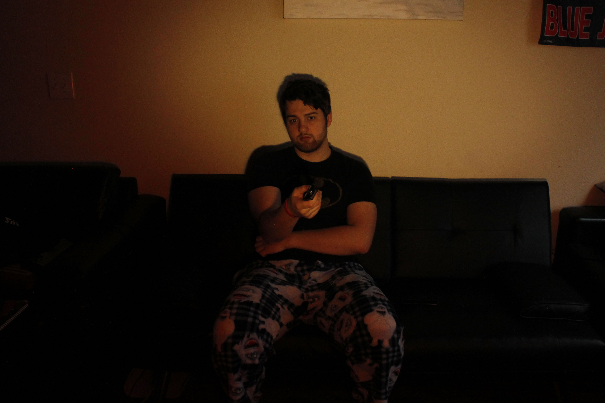
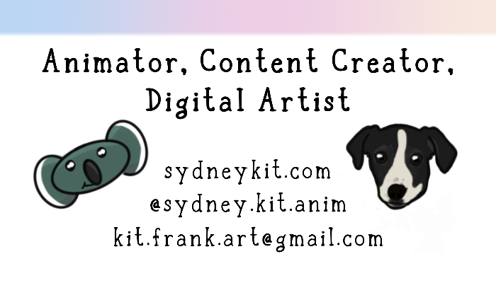

T-Minus 3 Weeks (Until The End Of The Semester)
Week Twelve
April 5, 2021-April 11, 2021
Finals is right around the corner so that means, checking grades and calculating how much I need on the finals in order to get a good grade. However, this semester I am finishing up my last GE's and my grades are not what I would like them to be. No, they are not awful by any means, just not where I know I can be. That being said, I have accomplished so much in my field and that is how I will rememeber the semester (even if the meh grades hurt my pride now).
This past semester I have made several accomplishments in my field:
1. I finished all the final edits of my comic this past week
2. The comic is currently in the process of being printed
3. Two (or three) of my works were accepted into a gallery show (More information later)
4. My work was featured in the Buckeye Boundary Breakers instagram account
5. I was finally able to create busniess cards after pushing them off for so long
I finished all the final edits of my comic this past week
I had two (very filled out) Word pages of notes in order to finalize the edits of my comic. I had less than a week to have external (to class) critiques and complete the edits. I am actually impressed with how on top of it I was and that I didn't feel overwhelmed or stressed about getting the edits done. I did forgeto to turn in an assignment for a GE which doesn't help my grades guilt, but in the long run it'll be fine... right?
The comic is currently in the process of being printed
THE COMIC IS BRING PRINTED! I REPEAT! THE COMIC IS BEING PRINTED! I am so excited, yet so nervous I feel like I could throw up. Just like Anna from Frozen "Don't know if I'm elated or gassy but I'm somewhere in that zone." That being said, pre-orders are still open! Want a coupon code? Check out the previous blog post!
Two (or three) of my works were accepted into a gallery show (More information later)
A piece from my 3D Modeling Class, my Drawing Class, and potentially a piece from my 3D Animation Class will be featured in the Columbus Spring Art Fest on April 18th from Noon to 6pm at the 400 W Rich St Gallery in Columbus. This is the second physical gallery outside of Ohio State's campus that my work will be featured in, so I am pretty excited about that!
My work was featured in the Buckeye Boundary Breakers instagram account
The Instagram is a new account but my work was one of the first published on the account! Check it out here! It features a page from my comic book that talks about ASL.
I was finally able to create busniess cards after pushing them off for so long
Not as big of a deal, but still a big deal! I was finally able to figure out how I wanted my business cards to look.
It came in pretty quick! I ordered them on Wednesday and got them Friday! The print quality is okay, but everyone needs to start somewhere right? I was disappointed because the place I ordered the cards from came highly recommended only for me to open up my order and some of the cards have spots on them.
See? Therefore, I think that it is okay that I do not get the prerfect grades I know I can get. Although, the GE's I am taking are writing and stats... both of which I am not good at to begin with......... Yeah, I have come to terms with my grade guilt.
Return to Blog List, Internet Art main page , Collections, Home.